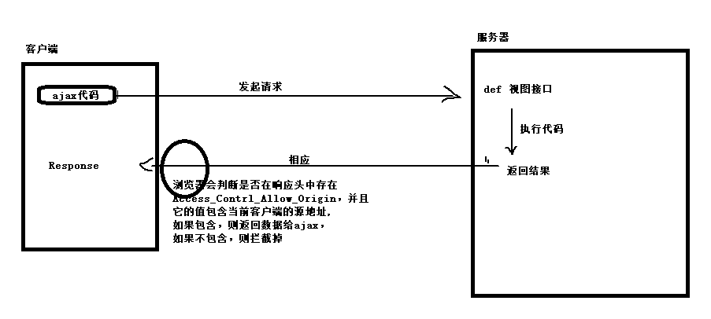

vue.js默认没有提供ajax功能的。
所以使用vue的时候，一般都会使用axios的插件来实现ajax与后端服务器的数据交互。
注意，axios本质上就是javascript的ajax封装，所以会被同源策略限制。
下载地址：
https://unpkg.com/axios@0.18.0/dist/axios.js
https://unpkg.com/axios@0.18.0/dist/axios.min.js
axios提供发送请求的常用方法有两个：axios.get() 和 axios.post() 。
增 post
删 delete
改 put
查 get
// 发送get请求
// 参数1: 必填，字符串，请求的数据接口的url地址，例如请求地址：http://www.baidu.com?id=200
// 参数2：可选，json对象，要提供给数据接口的参数
// 参数3：可选，json对象，请求头信息
axios.get('服务器的资源地址',{ // http://www.baidu.com
params:{
参数名:'参数值', // id: 200,
}
}).then(function (response) { // 请求成功以后的回调函数
console.log("请求成功");
console.log(response);
}).catch(function (error) { // 请求失败以后的回调函数
console.log("请求失败");
console.log(error.response);
});
// 发送post请求，参数和使用和axios.get()一样。
// 参数1: 必填，字符串，请求的数据接口的url地址
// 参数2：必填，json对象，要提供给数据接口的参数,如果没有参数，则必须使用{}
// 参数3：可选，json对象，请求头信息
axios.post('服务器的资源地址',{
username: 'xiaoming',
password: '123456'
},{
responseData:"json",
})
.then(function (response) { // 请求成功以后的回调函数
console.log(response);
})
.catch(function (error) { // 请求失败以后的回调函数
console.log(error);
});
// b'firstName=Fred&lastName=Flintstone'json是 JavaScript Object Notation 的首字母缩写，单词的意思是javascript对象表示法，这里说的json指的是类似于javascript对象的一种数据格式。
json的作用：在不同的系统平台，或不同编程语言之间传递数据。
json数据对象类似于JavaScript中的对象，但是它的键对应的值里面是没有函数方法的，值可以是普通变量，不支持undefined，值还可以是数组或者json对象。
// json数据的对象格式：
{
"name":"tom",
"age":18
}
// json数据的数组格式：
["tom",18,"programmer"]复杂的json格式数据可以包含对象和数组的写法。
{
"name":"小明",
"age":200,
"fav":["code","eat","swim","read"],
"son":{
"name":"小小明",
"age":100,
"lve":["code","eat"],
}
}
// 数组结构也可以作为json传输数据。json数据可以保存在.json文件中，一般里面就只有一个json对象。
总结：
1. json文件的后缀是.json
2. json文件一般保存一个单一的json数据
3. json数据的属性不能是方法或者undefined，属性值只能：数值、字符串、json和数组
4. json数据只使用双引号、每一个属性成员之间使用逗号隔开，并且最后一个成员没有逗号。
{
"name":"小明",
"age":200,
"fav":["code","eat","swim","read"],
"son":{
"name":"小小明",
"age":100
}
}工具：postman可以用于测试开发的数据接口。
javascript提供了一个JSON对象来操作json数据的数据转换.
| 方法 | 参数 | 返回值 | 描述 |
|---|---|---|---|
| stringify | json对象 | 字符串 | json对象转成字符串 |
| parse | 字符串 | json对象 | 字符串格式的json数据转成json对象 |
<!DOCTYPE html>
<html lang="en">
<head>
<meta charset="UTF-8">
<title>Title</title>
</head>
<body>
<script>
// json语法
let humen = {
"username":"xiaohui",
"password":"1234567",
"age":20
};
console.log(humen);
console.log(typeof humen);
// JSON对象提供对json格式数据的转换功能
// stringify(json对象) # 用于把json转换成字符串
let result = JSON.stringify(humen);
console.log(result);
console.log(typeof result);
// parse(字符串类型的json数据) # 用于把字符串转成json对象
let json_str = '{"password":"1123","age":20,"name":"xiaobai"}';
console.log(json_str)
console.log(typeof json_str)
let json_obj = JSON.parse(json_str);
console.log(json_obj);
console.log(typeof json_obj)
console.log(json_obj.age)
</script>
</body>
</html>ajax，一般中文称之为："阿贾克斯"，是英文 “Async Javascript And Xml”的简写，译作：异步js和xml数据传输数据。
ajax的作用： ajax可以让js代替浏览器向后端程序发送http请求，与后端通信，在用户不知道的情况下操作数据和信息，从而实现页面局部刷新数据/无刷新更新数据。
所以开发中ajax是很常用的技术，主要用于操作后端提供的数据接口，从而实现网站的前后端分离。
ajax技术的原理是实例化js的XMLHttpRequest对象，使用此对象提供的内置方法就可以与后端进行数据通信。
数据接口，也叫api接口，表示后端提供操作数据/功能的url地址给客户端使用。
客户端通过发起请求向服务端提供的url地址申请操作数据【操作一般：增删查改】
同时在工作中，大部分数据接口都不是手写，而是通过函数库/框架来生成。
ajax的使用必须与服务端程序配合使用，但是目前我们先学习ajax的使用，所以暂时先不涉及到服务端python代码的编写。因此，我们可以使用别人写好的数据接口进行调用。
jQuery将ajax封装成了一个函数$.ajax()，我们可以直接用这个函数来执行ajax请求。
| 接口 | 地址 |
|---|---|
| 天气接口 | http://wthrcdn.etouch.cn/weather_mini?city=城市名称 |
| 音乐接口搜索 | http://tingapi.ting.baidu.com/v1/restserver/ting?method=baidu.ting.search.catalogSug&query=歌曲标题 |
| 音乐信息接口 | http://tingapi.ting.baidu.com/v1/restserver/ting?method=baidu.ting.song.play&songid=音乐ID |
编写代码获取接口提供的数据：
jQ版本
<!DOCTYPE html>
<html lang="en">
<head>
<meta charset="UTF-8">
<title>Title</title>
<script src="js/jquery-1.12.4.js"></script>
<script>
$(function(){
$("#btn").on("click",function(){
$.ajax({
// 后端程序的url地址
url: 'http://wthrcdn.etouch.cn/weather_mini',
// 也可以使用method，提交数据的方式，默认是'GET'，常用的还有'POST'
type: 'get',
dataType: 'json', // 返回的数据格式，常用的有是'json','html',"jsonp"
data:{ // 设置发送给服务器的数据，如果是get请求，也可以写在url地址的?后面
"city":'北京'
}
})
.done(function(resp) { // 请求成功以后的操作
console.log(resp);
})
.fail(function(error) { // 请求失败以后的操作
console.log(error);
});
});
})
</script>
</head>
<body>
<button id="btn">点击获取数据</button>
</body>
</html>vue版本：
<!DOCTYPE html>
<html lang="en">
<head>
<meta charset="UTF-8">
<title>Title</title>
<script src="js/vue.js"></script>
<script src="js/axios.js"></script>
</head>
<body>
<div id="app">
<input type="text" v-model="city">
<button @click="get_weather">点击获取天气</button>
</div>
<script>
let vm = new Vue({
el:"#app",
data:{
city:"",
},
methods:{
get_weather(){
// http://wthrcdn.etouch.cn/weather_mini?city=城市名称
axios.get("http://wthrcdn.etouch.cn/weather_mini?city="+this.city)
.then(response=>{
console.log(response);
}).catch(error=>{
console.log(error.response)
});
}
}
})
</script>
</body>
</html>总结：
1. 发送ajax请求，要通过$.ajax()，参数是对象，里面有固定的参数名称。
$.ajax({
"url":"数据接口url地址",
"method":"http请求方式，前端只支持get和post",
"dataType":"设置服务器返回的数据格式，常用的json，html，jsonp，默认值就是json",
// 要发送给后端的数据参数，post时，数据必须写在data，get可以写在data,也可以跟在地址栏?号后面
"data":{
"数据名称":"数据值",
}
}).then(function(resp){ // ajax请求数据成功时会自动调用then方法的匿名函数
console.log( resp ); // 服务端返回的数据
}).fail(function(error){ // ajax请求数据失败时会自动调用fail方法的匿名函数
console.log( error );
});
2. ajax的使用往往配合事件/钩子操作进行调用。
jQuery还提供了$.get 和 $post简写$.ajax的操作。
// 发送get请求
// 参数1：数据接口的请求地址
// 参数2：发送给接口地址的数据参数
// 参数3：ajax请求成功以后，调用的匿名函数，匿名函数的第一个参数还是服务端返回的数据
// 参数4：设置服务端返回的数据格式，告诉给jQuery
$.get("test.php", { "func": "getNameAndTime" },
function(data){
alert(data.name); // John
console.log(data.time); // 2pm
}, "json");
// 发送post请求
// 参数1：数据接口的请求地址
// 参数2：发送给接口地址的数据参数
// 参数3：ajax请求成功以后，调用的匿名函数，匿名函数的第一个参数还是服务端返回的数据
// 参数4：设置服务端返回的数据格式，告诉给jQuery
$.post("test.php", { "func": "getNameAndTime" },
function(data){
alert(data.name); // John
console.log(data.time); // 2pm
}, "json");
同源策略，是浏览器为了保护用户信息安全的一种安全机制。所谓的同源就是指代通信的两个地址（例如服务端接口地址与浏览器客户端页面地址）之间比较，是否协议、域名(IP)和端口相同。不同源的客户端脚本[javascript]在没有明确授权的情况下，没有权限读写对方信息。
ajax本质上还是javascript，是运行在浏览器中的脚本语言，所以会被受到浏览器的同源策略所限制。
前端地址：http://www.oldboy.cn/index.html |
是否同源 | 原因 |
|---|---|---|
http://www.oldboy.cn/user/login.html |
是 | 协议、域名、端口相同 |
http://www.oldboy.cn/about.html |
是 | 协议、域名、端口相同 |
https://www.oldboy.cn/user/login.html |
否 | 协议不同 ( https和http ) |
http:/www.oldboy.cn:5000/user/login.html |
否 | 端口 不同( 5000和80) |
http://bbs.oldboy.cn/user/login.html |
否 | 域名不同 ( bbs和www ) |
同源策略针对ajax的拦截，代码：
<!DOCTYPE html>
<html lang="en">
<head>
<meta charset="UTF-8">
<title>Title</title>
<script src="js/vue.js"></script>
<script src="js/axios.js"></script>
</head>
<body>
<div id="app">
<button @click="get_music">点击获取天气</button>
</div>
<script>
let vm = new Vue({
el:"#app",
data:{},
methods:{
get_music(){
axios.get("http://tingapi.ting.baidu.com/v1/restserver/ting?method=baidu.ting.search.catalogSug&query=我的中国心")
.then(response=>{
console.log(response);
}).catch(error=>{
console.log(error.response)
});
}
}
})
</script>
</body>
</html>上面代码运行错误如下：
Access to XMLHttpRequest at 'http://tingapi.ting.baidu.com/v1/restserver/ting?method=baidu.ting.search.catalogSug&query=%E6%88%91%E7%9A%84%E4%B8%AD%E5%9B%BD%E5%BF%83' from origin 'http://localhost:63342' has been blocked by CORS policy: No 'Access-Control-Allow-Origin' header is present on the requested resource.上面错误，关键词：Access-Control-Allow-Origin
只要出现这个关键词，就是访问受限。出现同源策略的拦截问题。
CORS是一个W3C标准，全称是"跨域资源共享"，它允许浏览器向跨源的后端服务器发出ajax请求，从而克服了AJAX只能同源使用的限制。
实现CORS主要依靠后端服务器中响应数据中设置响应头信息返回的。
django的视图
def post(request):
response = new Response()
response .set_header("Access-Control-Allow-Origin","*")
return response;
// 在响应行信息里面设置以下内容：
Access-Control-Allow-Origin: ajax所在的域名地址
Access-Control-Allow-Origin: www.oldboy.cn # 表示只允许www.oldboy.cn域名的客户端的ajax跨域访问
// * 表示任意源，表示允许任意源下的客户端的ajax都可以访问当前服务端信息
Access-Control-Allow-Origin: *

总结：
0. 同源策略：浏览器的一种保护用户数据的一种安全机制。
浏览器会限制脚本语法不能跨源访问其他源的数据地址。
同源：判断两个通信的地址之间，是否协议，域名[IP]，端口一致。
ajax： http://127.0.0.1/index.html
api数据接口： http://localhost/index
这两个是同源么？不是同源的。是否同源的判断依据不会根据电脑来判断，而是通过协议、域名、端口的字符串是否来判断。
1. ajax默认情况下会受到同源策略的影响，一旦受到影响会报错误如下：
No 'Access-Control-Allow-Origin' header is present on the requested resource
2. 解决ajax只能同源访问数据接口的方式：
1. 在服务端的响应行中设置：
Access-Control-Allow-Origin: 允许访问的域名地址
2. jsonp
3. 是否服务端代理
思路：通过python来请求对应的服务器接口，获取到数据以后，